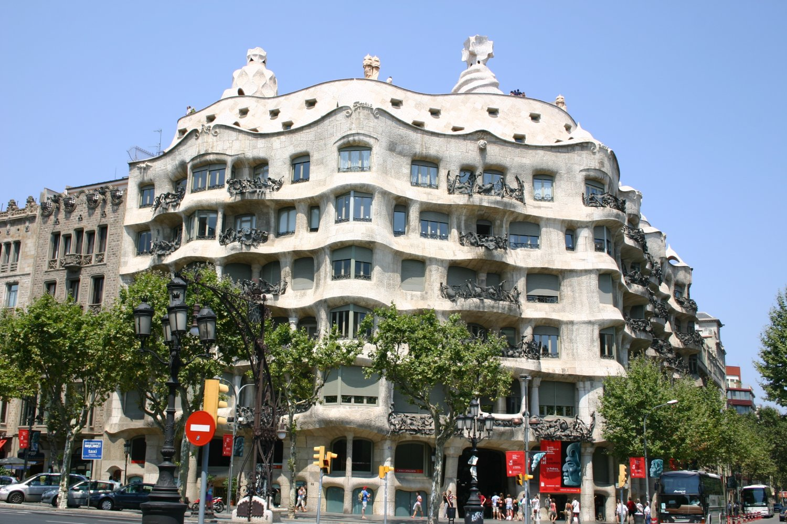

Casa Milà
카사밀라는 익히 라 페드레라(채석장이라는 뜻)로도 불리고 있으며,
안토니오 가우디(1852~1926년)의 작품으로 바르셀로나 중심가인
파세오 데 그라시아 거리에 위치해 있다. 1906년 설계를 시작해 1912년에 완공된 고급 연립주택이다.
1984년 유네스코 세계 문화 유산으로 지정되었다.
KBS 1TV의 《걸어서 세계속으로》 또는 EBS 1TV의 《세계테마기행》에서도 해당 장소를 소개시킨 적이 있었다.
카사 밀라
